Nyzo version 565 (commit on GitHub) adds the HistoricalBlockManager to allow the client to efficiently access blocks behind the BlockManager's retention edge.
This version affects the client primarily. Some small changes affect code used by other run modes.
In BlockFileConsolidator, a condition was added to allow consolidation to occur even if the retention edge is not set. This condition ensures that files are eventually consolidated even when a Nyzo instance has frequent discontinuities in its tracking. This change affects all run modes that use the BlockFileConsolidator.
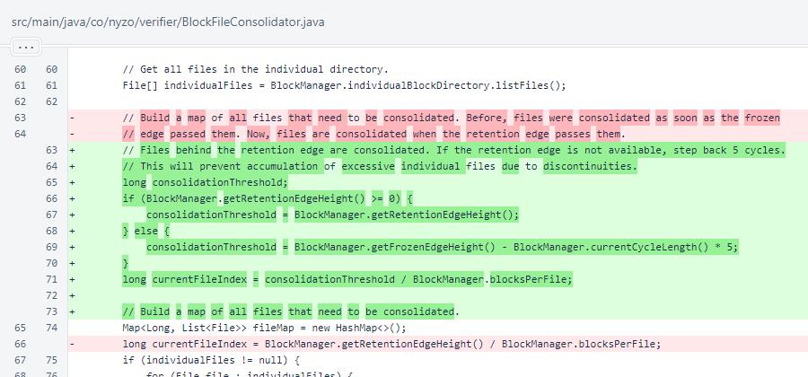Later in BlockFileConsolidator, a consolidated file's corresponding offset file is deleted just before the consolidated file is written. If the consolidated file is new, this has no effect. If the consolidated file is replacing another consolidated file, this will remove the offset file that contains offsets for the previous consolidated file. As the comment explains, the HistoricalBlockManager will create a new offset file if one is needed.
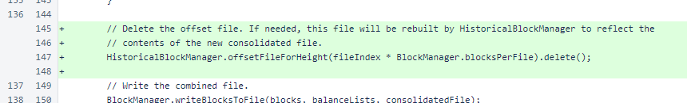HistoricalBlockManager calculates offsets to allow efficient reading of blocks directly from consolidated block files. The startManagerKey is used in the preferences file to indicate that the HistoricalBlockManager should be started. The alive field is used as a mutex for the thread.
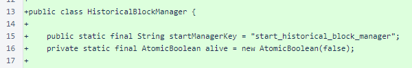The HistoricalBlockManager.start() method starts a thread for generating offset files. The comment explains time considerations.
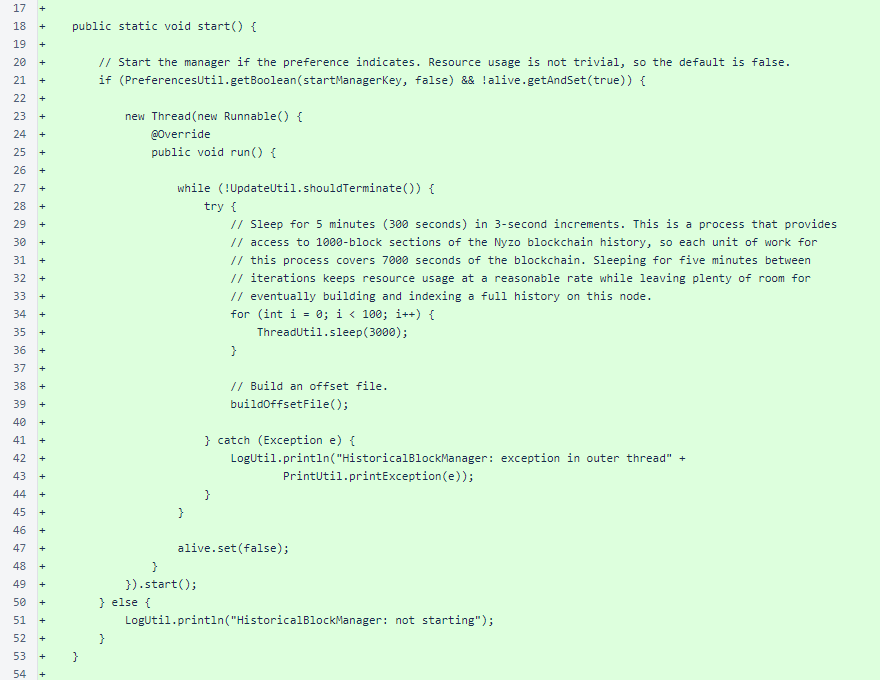The default setting is not starting HistoricalBlockManager. If you want to use the HistoricalBlockManager on your client installation, add the following line to /var/lib/nyzo/production/preferences.
start_historical_block_manager=1
HistoricalBlockManager.buildOffsetFile() creates an offset file for no more than one consolidated file. The first part of the method looks for a consolidated file for which an offset file does not exist. If a file is found, the second part of the method generates the offsets and writes the file.

HistoricalBlockManager.blockOffsetsForConsolidatedFile() determines the start and end byte offsets for each block contained in a consolidated file. The result always contains 1000 offset pairs. If a block is not present in the file, its offsets are negative.
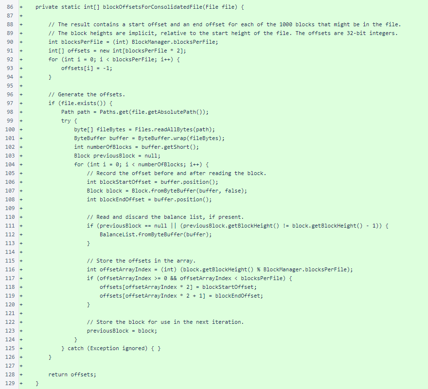HistoricalBlockManager.blockForHeight() provides a block on demand from the file system. It first looks to individual files, and then it looks to consolidated files for which an offset is available. No blocks are cached in memory, and no blocks are read other than the block requested.
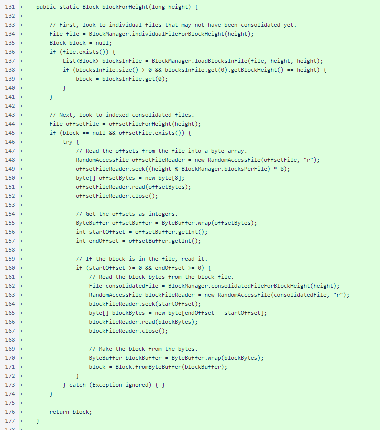HistoricalBlockManager.offsetFileForHeight() provides a File object representing the location of the offset file for a specified height. This is derived from the path of the consolidated file, appending "_offsets" to the file extension.
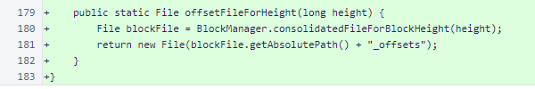In Verifier, checking of the WebListener.startWebListenerKey preference was eliminated. This has been moved inside the WebListener class to follow the pattern established by BlockFileConsolidator and followed by HistoricalBlockManager.
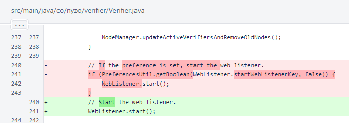In Client.main(), checking of the WebListener.startWebListenerKey preference was eliminated. Also, the BlockFileConsolidator and HistoricalBlockManager are now started. Termination was moved outside the startedDataManager if/else block to allow the client to terminate properly when the command loop exits normally.
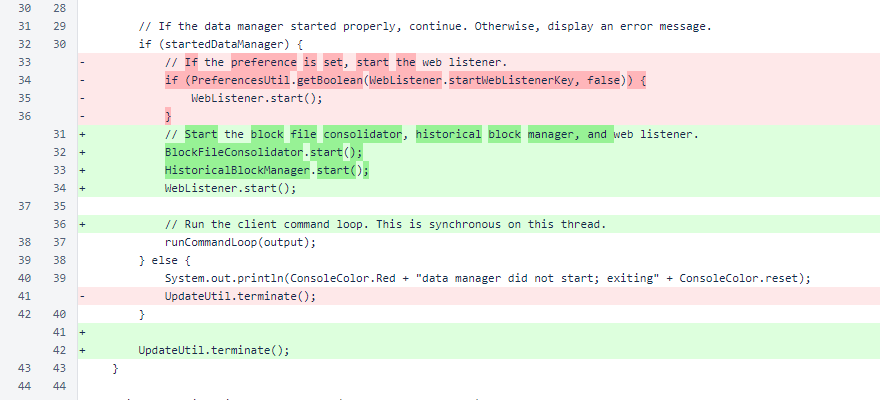At the end of Client.runCommandLoop(), an incorrect comment was corrected.
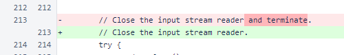In CommandEndpointWeb, the value of actionValueRun was simplified from "run command" to "run" to improve readability when used in a query string.
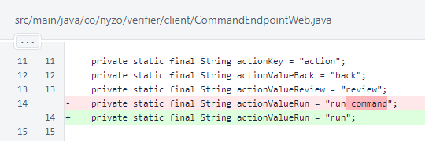To allow commands to be executed easily with pre-determined parameter values (e.g., http://client.nyzo.co/transactionSearch?timestamp=1564666847588&action=run), the CommandEndpointWeb.getResponse() method now checks if command parameter values are provided in the query string. If such values are provided, the form is processed.

In CommandEndpointWeb.processForm(), query parameters are now used in the appropriate context.
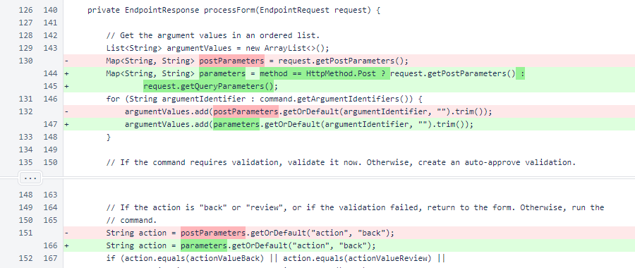In TransactionSearchCommand, HistoricalBlockManager is now used as a supplemental block source. Note that HistoricalBlockManager is not wired into BlockManager, nor should it be. Over time, BlockManager should be expected to become more efficient and more focused on providing streamlined, lightweight handling of the blocks necessary for blockchain processing, and HistoricalBlockManager should be expected to provide a more comprehensive view of the full blockchain history.
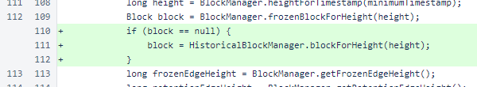In Sentinel, the WebListener preference is no longer checked. As noted above, this preference is now checked inside the WebListener class.
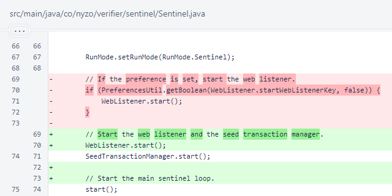In WebListener, an unused contentType constant was removed. As noted multiple times above, this class now checks the start_web_listener preference internally. The WebListener is active by default for the Micropay and documentation-server run modes, and it is inactive by default for all other run modes.
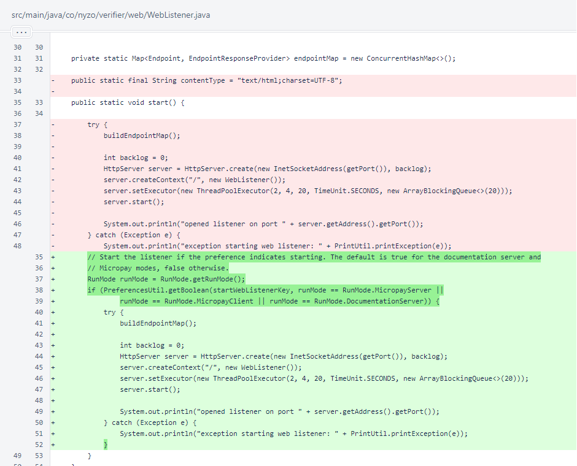